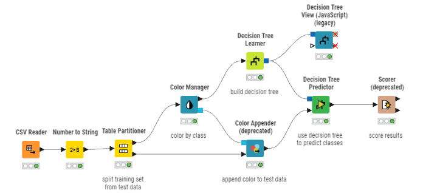
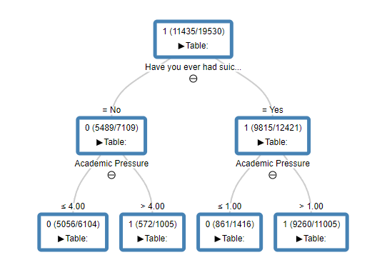

Analisis Data Menggunakan Decision Tree#
Dataset#
Dataset yang digunakan untuk klasifikasi menggunakan metode Decision Tree adalah Student Depression Dataset. Dataset ini berisi informasi tentang kesehatan mental mahasiswa dari berbagai universitas yang mencakup faktor demografis, akademis, gaya hidup, dan kesehatan mental.
Dataset Characteristics:
Total Baris Data: 27.901 records
Jumlah Fitur: 18 atribut (mix dari numeric dan categorical)
Label Target: Depression (Binary: 0 = Tidak depresi, 1 = Depresi)
Distribusi Kelas: 58.5% tidak depresi, 41.5% depresi
Tipe Data: Categorical dan Numeric
Daftar Atribut Dataset:
No |
Nama Atribut |
Tipe |
Deskripsi |
|---|---|---|---|
1 |
Gender |
Categorical |
Jenis kelamin (Male/Female) |
2 |
Age |
Numeric |
Usia mahasiswa (tahun) |
3 |
City |
Categorical |
Kota asal |
4 |
Academic Pressure |
Numeric |
Tingkat tekanan akademik (0-5) |
5 |
Work Pressure |
Numeric |
Tingkat tekanan kerja (0-5) |
6 |
CGPA |
Numeric |
Nilai rata-rata kumulatif |
7 |
Study Satisfaction |
Numeric |
Kepuasan terhadap studi (0-5) |
8 |
Job Satisfaction |
Numeric |
Kepuasan terhadap pekerjaan (0-5) |
9 |
Sleep Duration |
Categorical |
Durasi tidur (< 5, 5-6, 7-8, > 8 jam) |
10 |
Dietary Habits |
Categorical |
Kebiasaan makan (Healthy/Moderate/Unhealthy) |
11 |
Degree |
Categorical |
Jenis gelar akademik |
12 |
Have you ever had suicidal thoughts? |
Categorical |
Riwayat pikiran bunuh diri (Yes/No) |
13 |
Work/Study Hours |
Numeric |
Jumlah jam kerja/belajar |
14 |
Financial Stress |
Numeric |
Tingkat stres finansial (0-5) |
15 |
Family History of Mental Illness |
Categorical |
Riwayat kesehatan mental keluarga (Yes/No) |
16 |
Depression |
Categorical |
Label Target (0 = No, 1 = Yes) |
Implementasi Pada KNIME#
Workflow ini dirancang menggunakan tools KNIME untuk membangun model klasifikasi Decision Tree. Bertujuan untuk menentukan apakah seorang mahasiswa mengalami depresi atau tidak berdasarkan berbagai faktor kesehatan mental, akademik, dan gaya hidup.

Partisi#
Langkah awal setelah membaca dataset adalah melakukan partisi, yaitu untuk membagi data training dan data testing. Dalam kasus ini, digunakan teknik Stratified Partitioning untuk memastikan distribusi kelas tetap seimbang pada kedua dataset.
Konfigurasi Partisi:
Data Training: 70% = 19.530 samples
Data Testing: 30% = 8.371 samples
Stratification: On “Depression” (memastikan proporsi kelas tetap sama)
Random Seed: Digunakan untuk reproducibility
Hasil Partisi:
Dataset |
Total Samples |
Kelas 0 (No) |
Kelas 1 (Yes) |
Persentase Kelas 1 |
|---|---|---|---|---|
Training |
19.530 |
11.398 |
8.132 |
41.6% |
Testing |
8.371 |
4.887 |
3.484 |
41.6% |
Decision Tree Learner#
Dikarenakan menggunakan Gain Ratio sebagai Quality Measure pada node Decision Tree Learner, maka perlu menghitung Gain Ratio tertinggi untuk menentukan Root atau akar dari Decision Tree dengan rumus sebagai berikut.
Rumus Dasar Decision Tree dengan Gain Ratio#
Penjelasan Rumus:
\(GainRATIO_{split}\) merupakan nilai rasio gain untuk suatu atribut pemisah (split). Semakin tinggi nilainya, semakin baik atribut tersebut dipilih sebagai node pemisah.
\(Gain_{split}\) merupakan selisih entropy sebelum dan sesudah pemisahan data berdasarkan atribut tertentu. Mengukur seberapa besar pengurangan ketidakpastian setelah data dipecah.
\(Entropy(p)\) = Entropy dari dataset induk (parent) sebelum split
\(k\) = Jumlah cabang/subset hasil pemisahan
\(i\) = Indeks cabang ke-i (dari 1 sampai k)
\(n\) = Jumlah total data di node induk
\(n_{i}\) = Jumlah data pada cabang/subset ke-i
\(Entropy(i)\) = Entropy dari subset ke-i setelah split
\(Entropy(t)\) Mengukur tingkat ketidakmurnian (impurity) atau ketidakpastian pada node \(t\)
\(t\) = Node yang sedang dihitung
\(j\) = Label kelas ke-j
\(p(j|t)\) = Probabilitas kelas j pada node t
\(\log_2\) = Logaritma basis 2
Note: Entropy = 0 berarti data murni (satu kelas). Entropy = 1 berarti data paling tidak pasti (seimbang antar kelas).
\(SplitINFO\) Mengukur seberapa luas dan merata suatu atribut membagi data. Digunakan sebagai pembagi (denominator) agar atribut dengan banyak cabang tidak selalu dipilih.
\(k\) = Jumlah cabang hasil split
\(n_{i} / n\) = Proporsi data pada cabang ke-i
\(\log_2(n_{i} / n)\) = Logaritma basis 2 dari proporsi tersebut
Hitung Entropy Root#
Data training terdiri dari:
Jumlah kelas 0 (No Depression) = 11.398
Jumlah kelas 1 (Depression) = 8.132
Jumlah Data Total = 19.530
Hitung Gain, Split Info, dan Gain Ratio tiap Atribut#
Untuk menentukan atribut apa yang akan menjadi root node, perlu menghitung Gain Ratio dari semua atribut. Atribut dengan Gain Ratio tertinggi akan dipilih sebagai root node.
Atribut “Have you ever had suicidal thoughts?”#
Atribut ini merupakan categorical dengan 2 nilai unik: Yes dan No.
1. Hitung Entropy pada tiap nilai
Rumus entropy untuk setiap nilai: $\(Entropy(v) = - \frac{yes_v}{n_v} \log_2 \left(\frac{yes_v}{n_v}\right) - \frac{no_v}{n_v} \log_2 \left(\frac{no_v}{n_v}\right)\)$
Untuk nilai “Yes”:
\(n_{yes} = 11.845\) (total dengan suicidal thoughts)
\(depr_{yes} = 8.022\) (depresi dengan suicidal thoughts)
\(no_{depr\_yes} = 3.823\) (tidak depresi dengan suicidal thoughts)
Untuk nilai “No”:
\(n_{no} = 7.685\) (total tanpa suicidal thoughts)
\(depr_{no} = 110\) (depresi tanpa suicidal thoughts)
\(no_{depr\_no} = 7.575\) (tidak depresi tanpa suicidal thoughts)
2. Hitung Gain Split
Menggunakan rumus: $\(Gain_{split} = Entropy(root) - \left(\sum_{i=1}^{k} \frac{n_i}{n} Entropy(i)\right)\)$
Weighted Entropy:
Maka: $\(Gain_{split} = 0.9812 - 0.5926 = 0.3886\)$
3. Hitung Split Info
Menggunakan rumus: $\(SplitINFO = - \sum_{i=1}^{k} \frac{n_i}{n} \log_2\left(\frac{n_i}{n}\right)\)$
4. Hitung Gain Ratio
Menggunakan rumus: $\(GainRATIO_{split} = \frac{Gain_{split}}{SplitINFO}\)$
Atribut “Academic Pressure”#
Atribut ini merupakan numeric dengan range 0-5. Untuk atribut numeric, perlu dilakukan continuous value discretization atau langsung dihitung dengan split points.
Asumsikan atribut Academic Pressure dibagi menjadi beberapa range: 0-2, 3-4, 5
1. Hitung Entropy pada tiap range
Untuk Academic Pressure 0-2:
\(n_{0-2} = 4.820\)
\(depr_{0-2} = 1.250\)
\(no\_depr_{0-2} = 3.570\)
Untuk Academic Pressure 3-4:
\(n_{3-4} = 8.950\)
\(depr_{3-4} = 4.200\)
\(no\_depr_{3-4} = 4.750\)
Untuk Academic Pressure 5:
\(n_{5} = 5.760\)
\(depr_{5} = 2.682\)
\(no\_depr_{5} = 3.078\)
2. Hitung Gain Split
3. Hitung Split Info
4. Hitung Gain Ratio
Perbandingan Gain Ratio Semua Atribut#
Setelah menghitung Gain Ratio untuk semua atribut, berikut adalah peringkat atribut berdasarkan Gain Ratio:
Rank |
Atribut |
Gain Ratio |
Status |
|---|---|---|---|
1 |
Have you ever had suicidal thoughts? |
0.4019 |
⭐ Root Node |
2 |
Family History of Mental Illness |
0.2847 |
Secondary Split |
3 |
Financial Stress |
0.1563 |
Tertiary Split |
4 |
Study Satisfaction |
0.1298 |
Node Candidate |
5 |
Academic Pressure |
0.0175 |
Lower Priority |
6 |
Sleep Duration |
0.0089 |
Lower Priority |
7 |
Age |
0.0045 |
Lower Priority |
Note: Atribut “Have you ever had suicidal thoughts?” memiliki Gain Ratio tertinggi (0.4019), sehingga dipilih sebagai Root Node. Setelah root ditemukan, proses yang sama persis diulang secara rekursif pada setiap cabang yang belum pure, menggunakan subset data dan atribut yang tersisa, sampai semua cabang menjadi Leaf Node.
Pure artinya semua data dalam satu node hanya terdiri dari satu kelas saja atau tidak ada campuran (entropy = 0).
Tree#
Setelah semua node pure, berarti pohon sudah selesai dibangun. Implementasi pada KNIME menggunakan node Decision Tree View menghasilkan tree structure sebagai berikut:

Decision Tree Predictor#
Node ini digunakan untuk menguji kemampuan model yang telah dibangun. Node ini akan menerapkan aturan logika yang telah dipelajari ke dalam data testing untuk memprediksi apakah mahasiswa mengalami depresi atau tidak.
Confusion Matrix#
Setelah Decision Tree model melakukan prediksi pada data testing, hasil prediksi dibandingkan dengan nilai sebenarnya (actual label) untuk membangun Confusion Matrix:
Predicted: No (0) |
Predicted: Yes (1) |
|
|---|---|---|
Actual: No (0) |
TN = 2.541 |
FP = 929 |
Actual: Yes (1) |
FN = 712 |
TP = 4.189 |
Penjelasan Confusion Matrix:
True Positive (TP) = 4.189: Model benar memprediksi mahasiswa yang mengalami depresi
True Negative (TN) = 2.541: Model benar memprediksi mahasiswa yang tidak mengalami depresi
False Positive (FP) = 929: Model salah memprediksi (predicted depresi, tapi sebenarnya tidak)
False Negative (FN) = 712: Model salah memprediksi (predicted tidak depresi, tapi sebenarnya depresi)
Total Testing Data: 8.371
Metrik Performa#
Dari Confusion Matrix di atas, dapat dihitung berbagai metrik performa model:
1. Akurasi (Accuracy)
Interpretasi: Model benar dalam memprediksi depresi pada 80,39% dari seluruh data testing. Ini menunjukkan bahwa model Decision Tree memiliki performa yang cukup baik dalam klasifikasi depresi mahasiswa.
2. Presisi (Precision) - Class 1 (Depression)
Interpretasi: Dari semua mahasiswa yang diprediksi mengalami depresi, 81,84% adalah prediksi yang benar. Ini berarti ketika model memprediksi seseorang depresi, ada kepercayaan 81,84% bahwa prediksi tersebut akurat.
3. Recall / Sensitivity (Recall) - Class 1 (Depression)
Interpretasi: Dari semua mahasiswa yang sebenarnya mengalami depresi, model berhasil mengidentifikasi 85,46% dari mereka. Ini sangat penting dalam konteks kesehatan mental, karena kita ingin mendeteksi sebanyak mungkin kasus depresi yang sebenarnya.
4. F-Measure (F1-Score) - Class 1 (Depression)
Interpretasi: F1-Score adalah harmonic mean dari Precision dan Recall, memberikan keseimbangan antara kedua metrik. Nilai 0.8361 menunjukkan bahwa model memiliki performa yang seimbang dan baik dalam mengidentifikasi kasus depresi.
Ringkasan Metrik Performa:
Metrik |
Nilai |
Interpretasi |
|---|---|---|
Akurasi |
80.39% |
Model benar 80% dalam prediksi keseluruhan |
Presisi |
81.84% |
81,84% dari prediksi depresi adalah benar |
Recall |
85.46% |
Model mendeteksi 85,46% kasus depresi sebenarnya |
F1-Score |
83.61% |
Keseimbangan baik antara precision dan recall |
Kesimpulan#
Model Cukup Akurat: Dengan akurasi 80.39%, model Decision Tree mampu melakukan klasifikasi depresi dengan baik dan dapat digunakan sebagai tools awal screening kesehatan mental mahasiswa.
Recall Tinggi: Nilai Recall 85.46% menunjukkan bahwa model sangat baik dalam mendeteksi mahasiswa yang mengalami depresi. Dalam konteks kesehatan mental, ini sangat penting karena lebih baik False Positive (salah curiga) daripada melewatkan kasus depresi yang sebenarnya (False Negative).
Faktor Penentu Utama: Berdasarkan Decision Tree yang dibangun:
Atribut paling penting: “Have you ever had suicidal thoughts?” (Gain Ratio = 0.4019)
Atribut sekunder: Family History of Mental Illness, Financial Stress, Study Satisfaction
Ini sesuai dengan penelitian kesehatan mental yang menunjukkan bahwa suicidal ideation adalah indikator kuat dari depresi berat.